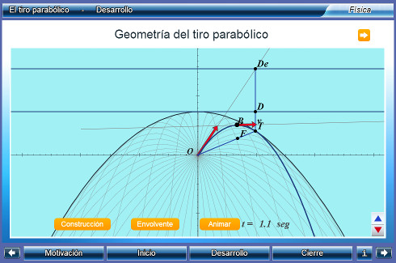

Unidades Didácticas
Interactivas para la Universidad


|
|
Unidades Didácticas Interactivas para la Universidad |
|
|
que implemente el Canvas de HTML5, como por ejemplo: Google Chrome, Mozila Firefox o Safari |
|
Un_052_ElTiroParabolico  Descargar |
El tiro parabólico
Se estudia el tiro parabólico como un fenómeno físico desde un punto de vista dinámico. Adicionalmente, se hace un estudio geométrico de las trayectorias generadas por un proyectil disparado a igual velocidad y con distintos ángulos, incluyendo su envolvente y el lugar geométrico de sus focos. Se incluye una justificación de dicho abordaje geométrico desde el punto de vista de conservación de la energía, así como una deducción del dicho abordaje. Área: Matemáticas, Geometría analítica, Física, Cinemática Nivel: Licenciatura |
|
Un_067_MovimientoBrowniano
Descargar |
Movimiento browniano
A través de una conversación con un tutor digital y la exploración simultánea de modelos interactivos y simulaciones, el estudiante hará observaciones, formulará hipótesis y realizará inferencias con el objeto de entender el movimiento browniano, así como su papel en la corroboración del modelo cinético de los fluidos y la naturaleza corpuscular de la materia. Asimismo, comprenderá la importancia del trabajo de Albert Einstein en la explicación de dicho fenómeno. Área: Física, Fisicoquímica, Bioquímica Nivel: Licenciatura, Bachillerato |
|
Un_068_EfectoFotoelectrico
Descargar |
Efecto fotoeléctrico
A través de una conversación con un tutor digital y la observación y/o manipulación simultánea de modelos y simuladores, el estudiante conocerá y entenderá el efecto fotoeléctrico, así como las aplicaciones tecnológicas que tiene. Área: Física, Fisicoquímica, Electromagnetismo Nivel: Licenciatura, Bachillerato |
|
Un_069_DecaimientoNuclear
Descargar |
Decaimiento Nuclear
En esta unidad didáctica el estudiante comprenderá el comportamiento del decaimiento radiactivo mediante la determinación de la vida media de una muestra radiactiva. Área: Física, Mecánica, Física Moderna Nivel: Licenciatura, Bachillerato |
|
Un_070_RadiacionDeCuerpoNegro
Descargar |
Radiación de cuerpo negro
En esta unidad didáctica el estudiante conocerá las teorías que se desarrollaron con la intención de darle solución al problema de la radiación del cuerpo negro. Además conocerá el proceso para encontrar el valor de la constante de Planck por medio de el efecto fotoeléctrico. Área: Física, termodinámica, Física Moderna Nivel: Licenciatura, Bachillerato |
|
Un_091_EcuacionDeOnda1D
Descargar |
La ecuación de onda en una dimensión
En unos pocos casos la ecuación de onda, y en particular la de Schrödinger, tienen una solución analítica exacta que ejemplifica algunas propiedades importantes de los sistemas cuánticos. En esta unidad se estudia la ecuación de Schrödinger en una dimensión como un caso particular de las ecuaciones diferenciales Ordinarias de segundo orden. Se presentan el efecto Tunel, la partícula libre, el pozo de potencial, la barrera de potencial y el coeficiente de transmisión Área: Física, Ondas, Ecuación de Schrödinger Nivel: Licenciatura |
|
Un_092_CamposElectricosConductores
Descargar |
Campos eléctricos en conductores
A lo largo de esta unidad se desarrollará el concepto de campo eléctrico en un conductor, haciendo énfasis en la configuración alcanzada por la distribución de carga eléctrica en la superficie del conductor, para explicar porque dicha configuarción genera que el campo eléctrico del conductor sea cero. Área: Física, Electricidad y Magnetismo, Conductores eléctricos Nivel: Licenciatura |
|
Un_093_DifraccionDeBragg
Descargar |
Difraccion De Bragg
En esta unidad didáctica el estudiante conocerá las propiedades y la forma en la que se crean los rayos X,además conocerá los tipos de estructura que tienen los materiales especialmente la de los cristales que tienen tamaños similares a la longitud de onda de los rayos X. Finalmente entenderá la ley de Bragg y conocerá su utilidad en la cristalografía. Área: Física, Mecánica,Óptica, Física Moderna Nivel: Licenciatura, Bachillerato |
|
que implemente el Canvas de HTML5, como por ejemplo: Google Chrome, Mozila Firefox o Safari |